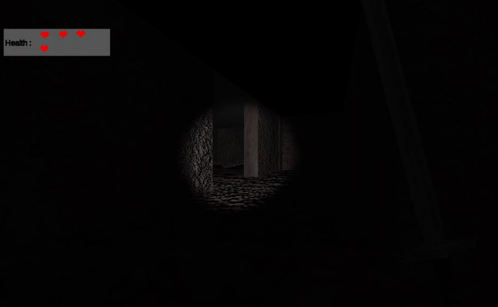
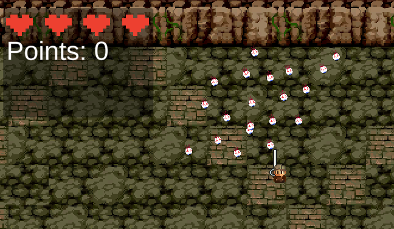
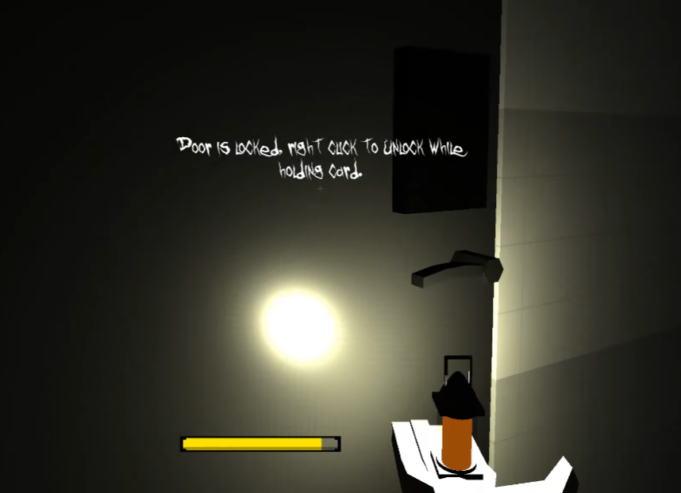

In Dungeon Hunt, is a game focuses on accessibility.
As part of my dissertation I looked into accessibility for visually impaired players and how we can make games more accessibile for more people.
As part of my dissertation I looked into accessibility for visually impaired players and how we can make games more accessibile for more people.

When it comes to this game, it was done with another member demonstrating my team work where we wanted to showcase Ai flocking which follows the player.
This was also my first time working on a boss fight.
This was also my first time working on a boss fight.

This prototype worked on it with other four people where we wanted to showcase survival horror elements. The prototype's idea is to stay in the dark, the game provide players with mechanics such as a lamp.
gives you cards to open doors, camera...etc which players can use to stay in the light.
Airy music was implemented for much scary atmosphere.